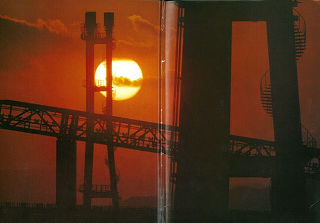
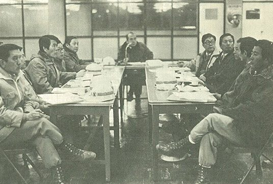
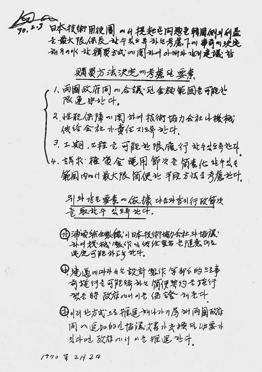

연재일 2014-01-16출처 조선일보 프리미엄조선 연재
1970년과 1970년대의 개막을 한꺼번에 알리는 붉은 햇덩이가 영일만 수평선 위로 얼굴을 내밀었다. 쇳물, 바로 그 빛깔이었다. 한국 산업화 역사에서 1970년 새해에 기록할 쾌거는 마침내 종합제철 건설의 막을 올렸다는 것이다. 빼앗긴 국가, 부서진 국가, 쪼개진 국가, 빈곤한 국가에서 각각 54년과 44년을 살아온 박정희와 박태준은 1970년대의 개막과 더불어 종합제철 건설의 막을 올리면서 드디어 ‘진정한 대망’을 손에 잡히는 어떤 벅찬 실체처럼 느낄 수 있었다.
국가와 국민과 역사의 이름으로 도전하는 포항종합제철 건설. 박태준이 그 출발선에 섰다. 그 자리는 겨울바람이 세차게 몰아치는 영일만 황량한 모래벌판이었다. 그가 연단 위에 올랐다. 제복을 입은 사원들이 군인들처럼 오와 열을 맞춰서 열중쉬어 자세를 취하고 있었다. 그는 속으로 헤아렸다. 입으로 하는 말은 잔소리에 그치겠지만, 깊은 내면에서 뿜어져 나오는 외침은 상대의 내면에 씨앗처럼 안착한다는 것을.
“포항종합제철은 조상의 혈세로 짓는 제철소입니다. 실패하면 조상에게 죄를 짓는 것이고 우리 농민들에게 죄를 짓는 것이니, 목숨을 걸고 일해야 합니다. 실패란 있을 수 없습니다. 실패하면 우리 모두 ‘우향우’해서 영일만 바다에 빠져죽어야 합니다. 기필코 제철소를 성공시켜 나라와 조상의 은혜에 보답합시다. 제철보국! 이제부터 이 말은 우리의 확고한 생활신조요 인생철학이 되어야 합니다.”
박태준은 비장했고 사원들은 뭉클했다. 누가 애쓸 필요도 없이 그 외침은 가슴과 가슴을 타고 번져나갔다. ‘조상의 혈세’는 포철 1기 건설에 투입되는 일제식민지 배상금을 의미했다. 이는 민족주의를 자극했다. 오른쪽으로 돌아서 곧장 나아가 바다에 투신하자는 ‘우향우’는 비장한 애국주의를 고양했다. 둘은 ‘제철보국’ 이념에 자양분이 되었다. 제철로써 조국의 은혜를 갚고 조국 세우기에 이바지하자는 것은, 민족과 국가를 위한 대역사에 참여한다는 자긍심을 조직에 불어넣으며 빠르게 ‘포스코 정신’으로 뿌리내렸다.

그런데 출발선을 막 떠난 박태준 앞에는 벌써 장애물이 기다리고 있었다. 거대한 국가자금을 만지고 있으면 그림자처럼 따라붙는 부패세력과 정치자금을 어떡할 것인가?
“서울사무소에 큰 문제가 발생했다고 합니다. 각종 청탁 전화들이 빗발치는 바람에 업무가 마비될 정도랍니다.”
포항에서 비서실장의 보고를 받은 그는 와야 할 것들이 지각도 안 하고 빨리도 왔다고 생각했다.
“누가 그런 짓을 해? 그거 이리 내.”
비서실장이 내민 것은 권력자들의 주문사항이었다. 박태준은 쫙쫙 찢어서 쓰레기통에 던져 버렸다. 그리고 이태 전 창립식(1968년 4월 1일)에서 ‘사회사업적’ 관리를 철저히 배제하겠다고 선언한 일을 떠올리고, 흔히 청탁을 거절당한 실력자들은 거절한 이를 모함하거늘 앞으로 더 철저한 원칙주의자로 일관해야 한다는 각오도 새로이 다졌다.
대일청구권자금으로 포항제철을 건설하는 박태준의 사명의식이나 윤리의식은 ‘조상의 혈세’라는 말에 함축돼 있다. 그 자금의 전용을 위한 사전정지 작업을 위해 도쿄에서 활약하고 있는 박태준과 만났던 도쿄대학 김철우 박사는 이렇게 증언한다.
<한국이 제철소 건설에 일본의 식민지배상금을 쓰기로 하는 과정에서 나는 큰 걱정부터 앞섰다. 대표적으로 그때 인도네시아 정권은 권력자 개인과 정당이 그 돈을 뜯어먹었던 것이다. 그러한 내 염려에 대해 박태준 사장은 단호히 답했다.
“그런 실례가 있기는 있는데, 내가 맡은 이상 그렇게 못합니다. 김 박사는 저를 잘 모르실 겁니다. 한국에 오셔서 제 주변 사람들에게 물어보면 저를 아시게 될 겁니다.”
이 자리에서 나는 박 사장에게 감명을 받았다. ‘이 사람은 믿어도 되겠구나’ 하고 마음을 놓았다.>
새해가 열흘 남짓 지나는 동안, 박태준은 ‘조상의 혈세’를 한 푼도 더럽히거나 낭비하지 않겠다는 자신의 의지만으로는 해결할 수 없는 구조적 문제와 맞닥뜨렸다. 포철 1기 설비구매의 대금지불과 설비선정, 그 중대한 절차에 비능률과 잡음을 부르는 혼선이 깔려 있었다. 청구권자금은 정부 간 협정이어서 포스코가 직접 사용할 수 없고, 상업차관은 계약 당사자의 합의를 거친 뒤 정부의 승인을 받도록 되어 있었다.
이는 포스코를 설비구매의 주체로 나서지 못하게 하는 덫이었다. 포스코는 정부기관인 ‘주일구매소’를 통해 설비구매를 계약할 수밖에 없었다.

그러한 이중구조가 당장 말썽을 일으켰다. 주일구매소가 부당하게 설치는 것이었다. 포스코가 면밀히 검토한 설비공급 업체에 대해 성능이나 가격에서 생트집을 잡는가 하면, 포스코가 정당하게 탈락시킨 업체와 계약하겠다고 우기는 것이었다. 엎친 데 덮친 격으로, 공급업체로부터 상납이나 리베이트를 받아내려는 유력 정치인들의 협잡도 개입했다.
박태준은 판단했다. 출발하자마자 맞닥뜨린 장애물들을 일거에 뛰어넘지 못하면 정치적 스캔들에 휘말리고 설비구매 차질로 전체 공기와 비용에 심각한 결과를 초래할 것이라고. 이것을 말끔히 해치워줄 존재가 필요했다. 오직 청와대의 한 사람뿐이었다.
단단히 벼르고 있는 박태준에게 기회가 왔다. 1970년 2월 3일, 대통령께 공사 진척 상황을 보고하라는 청와대 비서실의 연락을 받았다. 박태준이 브리핑을 시작하려 하자 박정희가 비서들에게 나가 있으라고 했다.
“완벽주의자인 임자가 알아서 잘하고 있을 텐데, 보고는 무슨 보고. 그래, 일은 순조롭게 되어가나?”
박정희는 박태준의 속내를 꿰뚫는 듯했다.
“구매절차에 문제가 있습니다.”
“어떤 건가?”
박태준은 설비구매에서 부닥친 난관을 설명하고 개선방안을 건의했다. 심각하게 듣고 있던 박정희가 말했다.
“지금 건의한 내용을 여기에 적어봐.”
박정희가 메모지를 내밀자, 박태준은 경제부처 회의에서 지시할 자료인가 하며 건의사항을 간략히 정리했다.
박태준의 구매방식에 관한 건의는, 구매방법 결정에서 고려할 요소 4가지와 이를 뒷받침할 행정절차 3가지였다. 전문-목표-방법으로 구성한 그것은, 설비구매를 둘러싼 모든 문제를 단번에 해결할 조건을 갖추고 있었다. ‘포철이 일본기술협력회사와 협의하여 공급업체를 선정하도록 한다’는 것은 주일구매소나 관료들이나 정치인들의 간섭을 배제한다는 뜻이다. ‘경우에 따라 사전 시행을 할 수 있도록 하는 간편계약을 했을 때 정부에서 이를 보증해준다’는 것은 포철이 구매계약의 주체로 나서고 정부가 구매절차의 간소화에 동의한다는 뜻이다.
박태준이 박정희에게 메모지를 넘겼다. 이때 깜짝 놀랄 일이 벌어졌다. 내용을 야무지게 훑어본 박정희가 메모지의 좌측 상단 모서리에 친필서명을 하여 도로 내밀지 않는가. 그는 당혹스러웠다. 박정희를 오래 보좌했으나 처음 보는 결재방식이었다.
“내 생각에 임자에겐 이게 필요할 것 같아. 어려울 때마다 나를 만나러 오기가 거북할 것 같아서 아예 서명을 해주는 거야. 고생이 많을 텐데, 소신껏 밀고 나가.”
박정희는 따뜻한 목소리에 미소까지 지었다. 박태준은 가슴이 찡했다. 몇 달 전 ‘3선 개헌지지 성명’의 서명에 동참해달라는 요청을 받고 거부했을 때도 ‘원래 그런 친구야’ 하고 받아넘긴 바로 그 사람이 이번엔 대통령 권한의 일부를 자신에게 일임하지 않는가.
“각하, 반드시 해내겠습니다.”
박태준은 영혼으로 주먹을 불끈 쥐었다. 박정희의 전폭적 신임과 지지, 이것은 박태준의 책임감과 사명감을 더 키우는 영양분이 되었다.
너무나 가볍고 건조한 종이, 그러나 그것은 박정희의 무겁고 극진한 마음의 선물이었다. 대일청구권자금 전용을 착상하고 건의해준 일에 대한 고마움의 뜻도 담았을 것이다. 박정희의 친필서명이 적힌 그 메모지는 포스코 역사에서 ‘종이마패’라 불린다. 임금이 암행어사에게 마패로써 전권을 위임했듯, 대통령이 포철 사장에게 사인 메모지로써 전권을 위임했기 때문이다.
종이마패는 박태준이 소신껏 밀고 나갈 수 있는 버팀목이 된다. 그러나 그는 한 번도 그것을 내민 적이 없다. 관계자 외에는 일절 언급조차 않다가, 1979년 10월 26일 박정희 대통령의 급서 후 고인의 포항종합제철에 대한 집념과 애정을 회고하는 자리에서 처음 공개하게 되며, 현재 그것은 진본 그대로 포스코역사관에 전시돼 있다.
